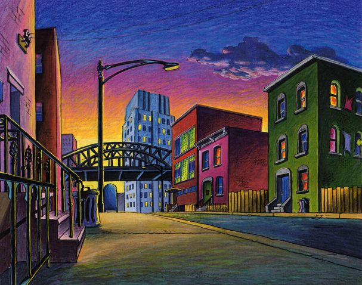
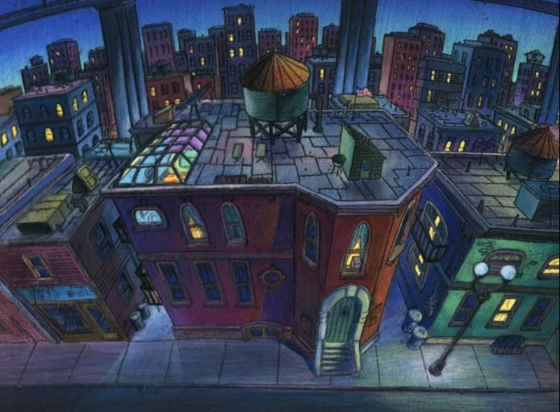
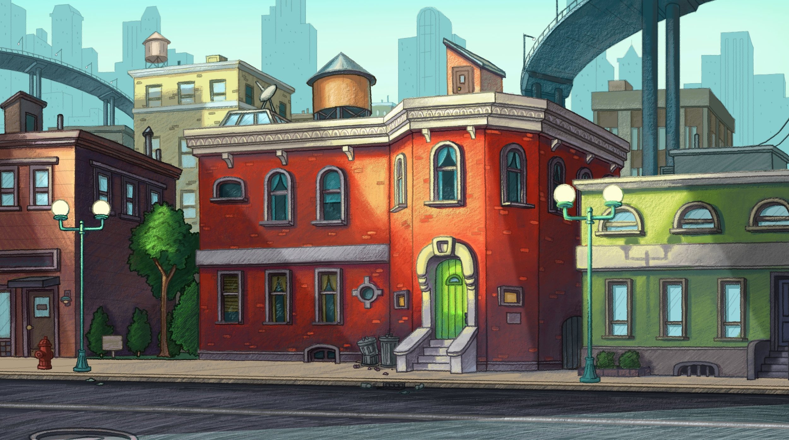
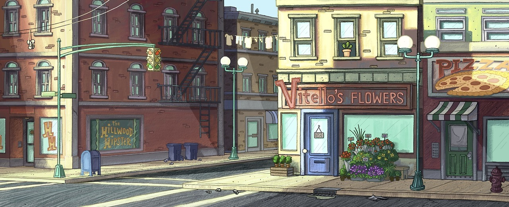
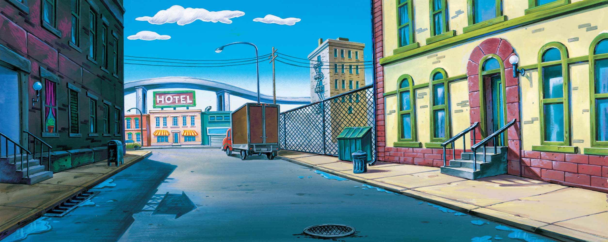
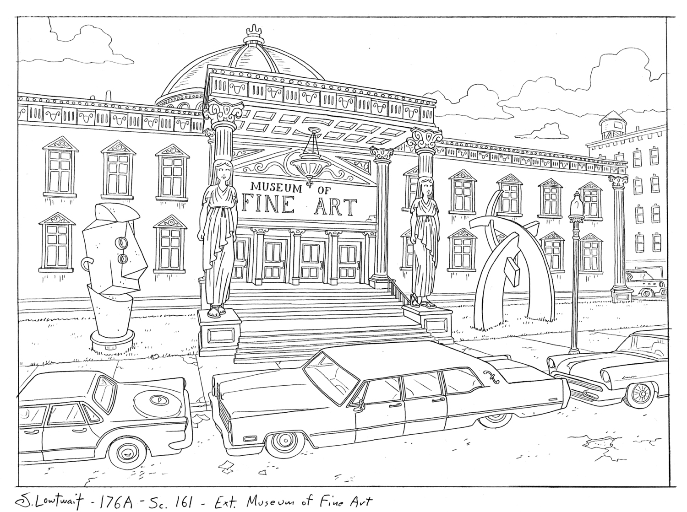
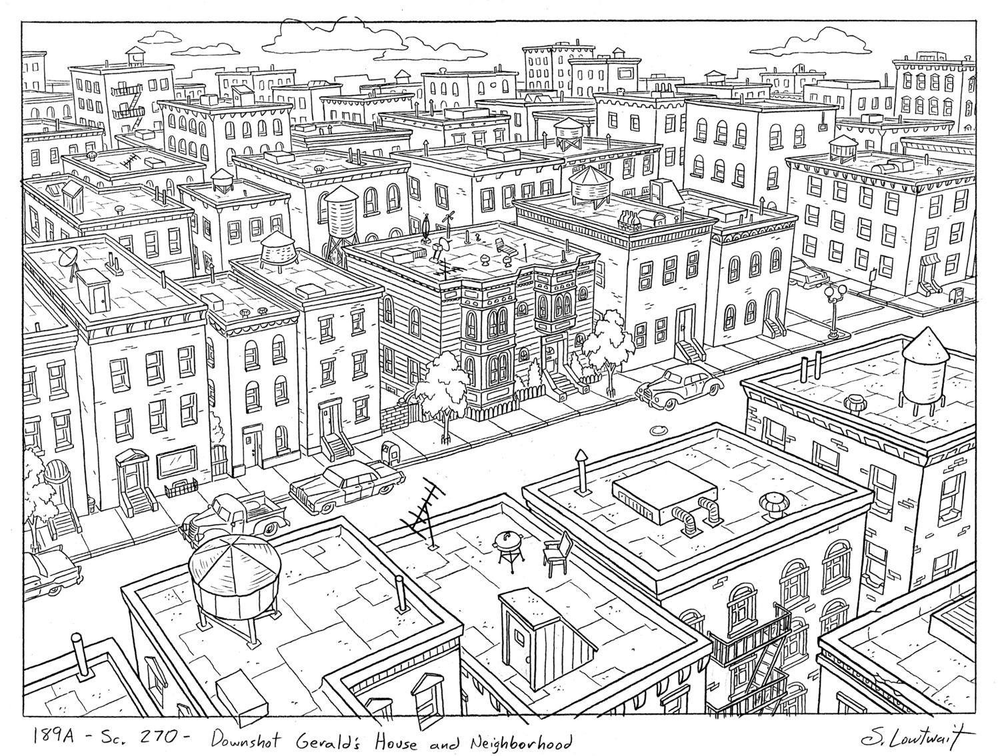
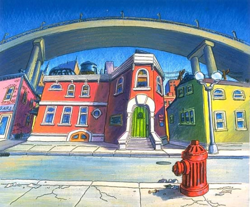
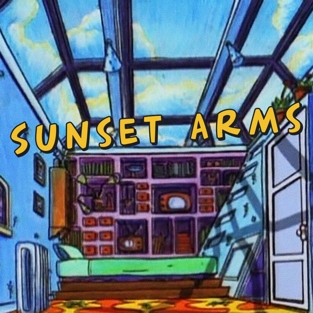

Location
The show takes place in the fictional city of Hillwood. Its location is set in Washington, although, Craig Bartlett drew inspiration from several places he once resided in such as Portland, and Brooklyn. The gallery below shows how Craig incorporated his real life experiences into Hillwood!
Read More









About Sunset Arms
First built in the 1700's. This building is known a historical landmark. This is where the great "Tomato Incident" took place.